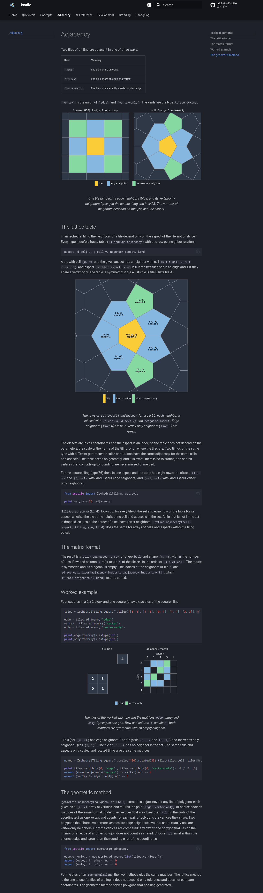
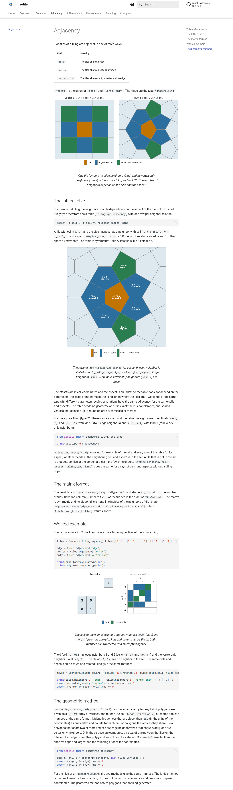
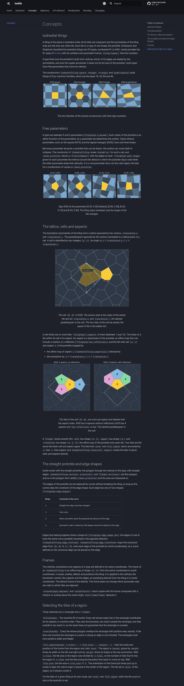
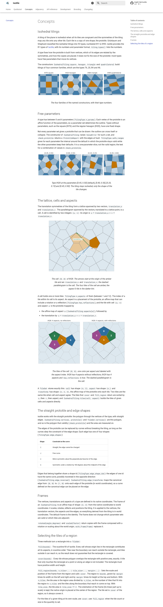
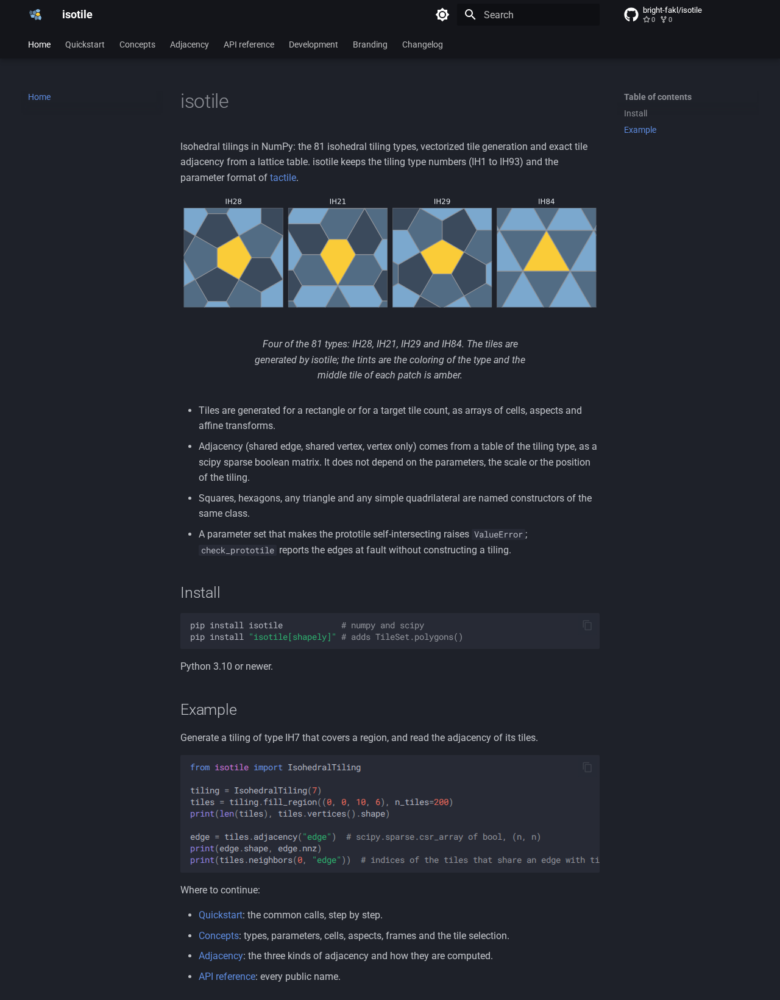
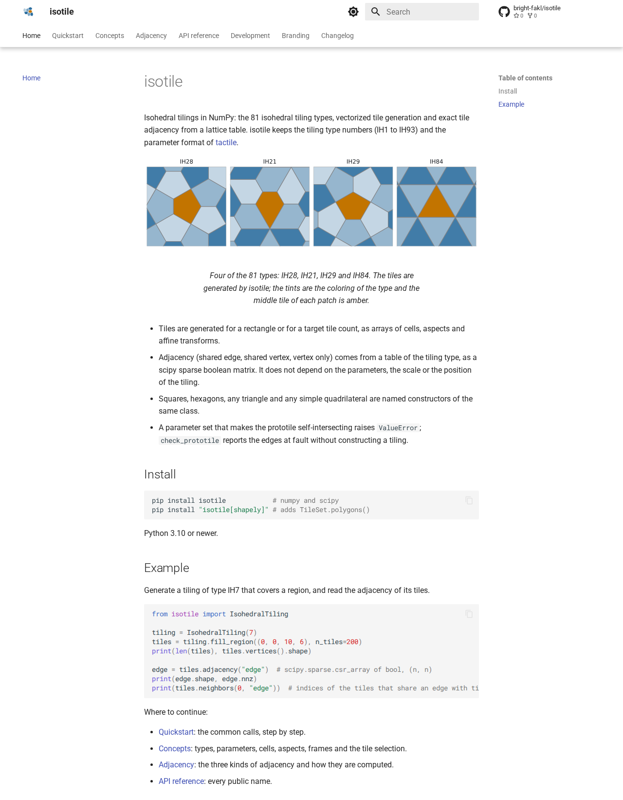
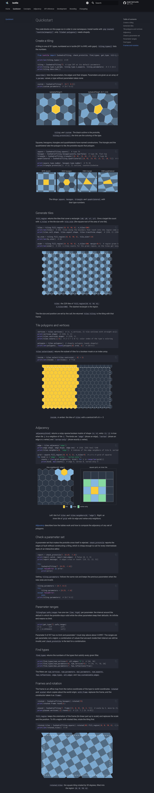
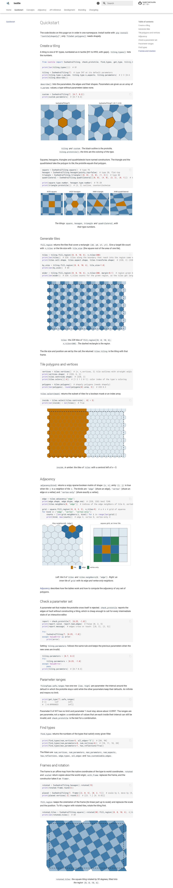

Fourteen light/dark SVG figures for the home, quickstart, concepts and adjacency pages of the isotile docs, generated by scripts/make_doc_figures.py from isotile tiles, polygons and adjacency, on the docs-skeleton branch of PR 2. CI is green.
n_aspects tiles; the parallelogram is a drawing aid, tiles may lie outside it), anchor point (the native origin: a vertex in 63 of the 81 types, on an edge in 4, elsewhere in 14), aspect and tile formula. concepts-lattice and concepts-aspects now show the lattice points as dots, the origin, the colored tiles of cell (0, 0) and the dashed parallelogram between dots; new concepts-cells (IH29) shows four neighboring cells, outlined, as translates of one group.scripts/make_doc_figures.py writes 26 SVG files (13 figures, -light and -dark) to docs/assets/figures/. It uses plain matplotlib (added to the docs dependency group only, uv.lock updated) and a script-local helper built on cover, tile polygons, neighbors and the type adjacency table; the library gains no plotting code.#2c6e9e, #c27400; dark #85b7e0, #facc38, plus a green and a plum for aspects and vertex-only neighbors), shown with Material's #only-light and #only-dark URL fragments.svg.hashsalt, date, creator, format and type metadata removed, path data rounded to 0.1 pt, collection styles moved to the group. Two runs in separate processes give identical files; --check compares with the stored files.md_in_html, <figure> and <figcaption>); short lead-in sentence in Concepts for the named families; a "Regenerate the figures" section in Development; CHANGELOG line.tests/test_docs_examples.py: every image of a page resolves and has alt text, and every figure file is shown on some page.| Page | Figures |
|---|---|
| index | hero |
| quickstart | quickstart-create, concepts-families (also in concepts), quickstart-fill, quickstart-select, quickstart-adjacency, quickstart-frames |
| concepts | concepts-families, concepts-parameters, concepts-lattice, concepts-cells, concepts-aspects |
| adjacency | adjacency-neighbors, adjacency-offsets, adjacency-matrix |
Not drawn: curved edge shapes (the API only exposes the shape letters I, J, U, S).
| Check | Result |
|---|---|
| Asset size | docs/assets/figures/ 0.58 MB (28 files); logo assets 81 KB |
mkdocs build --strict | no warnings |
| Screenshots, light and dark | looked at all four changed pages; no overlapping or clipped labels; light and dark variants swap with the scheme |
| pytest | 2,844 passed, 78 skipped |
ruff, ruff format, mypy --strict, uv lock --check, pre-commit | clean |
make_doc_figures.py --check | up to date; two consecutive runs identical |
| CI at 9ffe3af | all jobs green (lint, typecheck, tests on Linux 3.10 to 3.13, macOS, Windows, tactile-equivalence, data-check, minimum-versions, wheel-smoke-test, check-docs, docs build); deploy skipped on the PR by design |
named families figure appears on Quickstart and on Concepts (same file). A separate drawing for one of them would be possible.make_doc_figures.py --check; the files depend on the matplotlib version in uv.lock. It can be added to the docs workflow if wanted.
Adjacency, dark scheme.

Adjacency, light scheme: neighbor kinds, lattice offsets and neighbor aspect, matrix of the worked example.

Concepts, dark scheme.

Concepts, light scheme: named families, free parameters, lattice points and translation vectors (IH28), cells as translates of one group (IH29), aspects and the origin (IH28, IH29).

Home page, dark scheme.

Home page, light scheme, with the hero figure (IH28, IH21, IH29, IH84).

Quickstart, dark scheme.

Quickstart, light scheme: six figures after the code blocks (IH7 default and custom, named families, fill_region, select, adjacency, rotated frame).